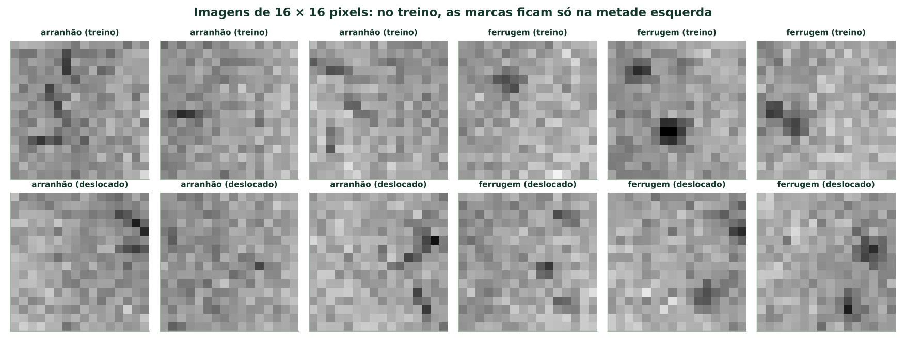
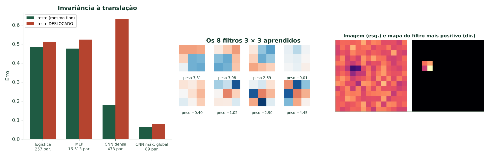

Redes neurais convolucionais (CNN)
Filtros pequenos que percorrem a imagem com os mesmos pesos em toda parte — reconhecem um padrão onde quer que ele apareça, com poucos parâmetros.
Comece por aqui
Uma imagem de 16 × 16 pixels tem 256 valores. Uma rede comum trata cada pixel como uma variável, com um peso próprio: uma mancha no canto superior e a mesma mancha no canto inferior são, para ela, coisas sem relação. A rede convolucional parte de duas ideias sobre imagens: o que importa é local (uma mancha ocupa poucos pixels vizinhos) e o mesmo padrão pode aparecer em qualquer lugar. Por isso usa pequenos filtros que percorrem a imagem inteira, com os mesmos pesos em todas as posições.
Todos os modelos são treinados com folhas cujas marcas estão só na metade esquerda e testados também em folhas com as marcas só na metade direita. Uma CNN com 89 parâmetros acerta 92,25% das folhas deslocadas. Uma rede comum com 16.513 parâmetros acerta 47,75% — menos que uma moeda.
O que é uma rede convolucional
Uma camada convolucional aplica \(K\) filtros de tamanho pequeno (aqui 3 × 3). Cada filtro percorre a imagem: em cada posição, multiplica seus 9 pesos pelos 9 pixels sob ele, soma e acrescenta um viés — produzindo um mapa de características, que diz quanto aquele padrão está presente em cada lugar. Depois de uma ativação (ReLU), uma camada de pooling resume o mapa; o máximo global guarda só a resposta mais forte em toda a imagem. A saída final é uma logística nesses resumos.

| Modelo | Estrutura | Parâmetros |
|---|---|---|
| Logística | 256 pesos + viés | 257 |
| MLP | 256 → 64 → 1 | 16.513 |
| CNN com camada densa | 8 filtros 3 × 3 → máximo 2 × 2 → densa (392 → 1) | 473 |
| CNN com máximo global | 8 filtros 3 × 3 → máximo global → densa (8 → 1) | 89 |
Pressupostos e como verificá-los
| Pressuposto ou cuidado | Por que importa | Como verificar |
|---|---|---|
| Estrutura espacial local | Os filtros só veem vizinhanças. | Natureza dos dados (imagem, sinal, espectro). |
| Invariância desejada | O pooling global ignora a posição; às vezes a posição importa. | Pergunte se o lugar do padrão é informativo. |
| Dados de treino representativos | A rede não generaliza para o que não viu. | Teste em condições diferentes das do treino. |
| Vários pontos de partida | Otimização não convexa. | Repita sementes. |
| Validação honesta | Muitos hiperparâmetros. | Conjunto de teste intocado. |
Formulação e cálculo
Em que:
- \(I\)
- a imagem, 16 × 16
- \(W^{(k)},\ b_k\)
- os 9 pesos e o viés do filtro \(k\)
- \(A^{(k)}_{rs}\)
- mapa de características: resposta do filtro na posição \((r,s)\); 14 × 14 posições
- \(\operatorname{ReLU}(a)\)
- \(\max(0,a)\)
- \(M_k\)
- máximo global do mapa \(k\)
- \(v_k,\ c\)
- pesos e viés da saída
Exemplo numérico: uma convolução à mão
Janela 3 × 3 em torno do pixel mais escuro de uma folha com ferrugem (linha 5, coluna 6):
| Coluna 5 | Coluna 6 | Coluna 7 | |
|---|---|---|---|
| Linha 4 | 0,304 | 0,390 | 0,444 |
| Linha 5 | 0,379 | 0,303 | 0,636 |
| Linha 6 | 0,483 | 0,654 | 0,604 |
O filtro tem 8 no centro e −1 nos oito vizinhos, tudo dividido por 8. A soma dos produtos é o pixel central menos a média dos vizinhos: \(0{,}303-0{,}487=-0{,}1836\). Um valor negativo grande indica um ponto mais escuro que o entorno — o que caracteriza uma mancha redonda e pequena. O mesmo filtro, com os mesmos 9 pesos, é aplicado em todas as 196 posições: é o compartilhamento de pesos, que faz a rede ter 9 pesos por filtro em vez de 9 × 196.
Na rede treinada, os filtros não são escolhidos à mão: são aprendidos por retropropagação, exatamente como os pesos de um MLP.
Propriedades
- Equivariância à translação: deslocar a imagem desloca o mapa.
- Com pooling global, invariância à translação: a saída não depende da posição.
- Poucos parâmetros por camada, independentemente do tamanho da imagem.
- Camadas empilhadas detectam padrões cada vez maiores e mais abstratos.
- Neurônios ReLU podem "morrer": se a entrada fica sempre negativa, o gradiente é zero.
- Treino não convexo, sensível à semente.
Como interpretar os resultados
| Elemento | O que informa | Cuidado |
|---|---|---|
| Filtros aprendidos | Que padrões locais a rede procura. | Em camadas profundas, pouco legíveis. |
| Mapa de características | Onde o padrão aparece. | Útil para verificar se a rede olha o lugar certo. |
| Peso de cada filtro na saída | Se o padrão é evidência a favor ou contra. | Combinações importam. |
| Erro em dados deslocados | Se a rede aprendeu a forma ou a posição. | Teste em condições novas. |
Como executar no R e em Python
Onde executar o código em Python
Não é preciso instalar nada: o Google Colab é um computador na nuvem, gratuito, que executa Python pelo navegador e já traz as bibliotecas usadas aqui (numpy, scipy e matplotlib).
No R, o pacote keras3 (interface para o Keras, que roda sobre TensorFlow ou outros motores) exige uma instalação adicional do Python e do TensorFlow, feita uma vez com keras3::install_keras(). As camadas usadas são layer_conv_2d(), layer_max_pooling_2d(), layer_global_max_pooling_2d(), layer_flatten() e layer_dense(). O pacote torch é a alternativa sem Python. Em Python, keras, tensorflow ou torch. O script desta ficha implementa a CNN em numpy, com a retropropagação escrita à mão, para que cada passo fique visível.
library(keras3)
cnn <- keras_model_sequential(input_shape = c(16, 16, 1)) |>
layer_conv_2d(filters = 8, kernel_size = c(3, 3), activation = "relu") |>
layer_global_max_pooling_2d() |>
layer_dense(units = 1, activation = "sigmoid")
summary(cnn)
Exemplo de aplicação
Contexto dos dados
Os dados são fictícios e foram criados pelo autor: 1.600 imagens de 16 × 16 pixels, em tons de cinza, de folhas de café. As da classe 1 têm de uma a três manchas de ferrugem, redondas; as da classe 0, de um a três arranhões, alongados. As duas marcas escurecem a folha em quantidade parecida (brilho médio 0,6015 e 0,6043; fração de pixels escuros 6,03% e 5,56%), de modo que só a forma distingue as classes. Há textura de fundo, uma nervura e ruído. As 800 imagens de treino e 400 de teste têm as marcas apenas na metade esquerda da folha; outras 400, de teste deslocado, têm as marcas apenas na metade direita — posições que nenhum modelo viu no treino. O arquivo folhas.csv (pasta scripts/ do site) traz uma imagem por linha, com o conjunto, a classe e os 256 pixels.
Código em R
# Redes neurais convolucionais (CNN): exemplo completo ----
# Pacote: keras3 (exige instalar o Python e o TensorFlow uma única vez)
# install.packages("keras3"); keras3::install_keras()
library(keras3)
url <- "https://cassiushenrique.github.io/ModelosEstatisticos/scripts/folhas.csv"
fol <- if (file.exists("folhas.csv")) read.csv("folhas.csv") else read.csv(url)
table(fol$conjunto, fol$classe)
img <- function(d) array_reshape(as.matrix(d[, paste0("p", 1:256)]), c(nrow(d), 16, 16, 1))
tr <- fol[fol$conjunto == "treino", ]; te <- fol[fol$conjunto == "teste", ]
ds <- fol[fol$conjunto == "deslocado", ]
Xtr <- img(tr); Xte <- img(te); Xds <- img(ds)
image(t(Xtr[1, 16:1, , 1]), col = gray.colors(64), axes = FALSE) # uma folha
# ---- 1. CNN com máximo GLOBAL: 8 filtros 3x3, ReLU, máximo em toda a imagem
set.seed(1); set_random_seed(1)
cnn <- keras_model_sequential(input_shape = c(16, 16, 1)) |>
layer_conv_2d(filters = 8, kernel_size = c(3, 3), activation = "relu") |>
layer_global_max_pooling_2d() |>
layer_dense(units = 1, activation = "sigmoid")
summary(cnn) # 89 parâmetros
cnn |> compile(optimizer = optimizer_adam(0.01), loss = "binary_crossentropy",
metrics = "accuracy")
hist <- cnn |> fit(Xtr, tr$classe, epochs = 40, batch_size = 32, validation_split = 0.2)
plot(hist)
cnn |> evaluate(Xte, te$classe) # teste do mesmo tipo
cnn |> evaluate(Xds, ds$classe) # teste DESLOCADO
# ---- 2. CNN com máximo em blocos 2x2 seguido de camada densa
cnn2 <- keras_model_sequential(input_shape = c(16, 16, 1)) |>
layer_conv_2d(8, c(3, 3), activation = "relu") |>
layer_max_pooling_2d(c(2, 2)) |>
layer_flatten() |>
layer_dense(1, activation = "sigmoid")
cnn2 |> compile(optimizer = optimizer_adam(0.01), loss = "binary_crossentropy", metrics = "accuracy")
cnn2 |> fit(Xtr, tr$classe, epochs = 40, batch_size = 32, verbose = 0)
cnn2 |> evaluate(Xds, ds$classe)
# ---- 3. Referências: logística e MLP nos 256 pixels
mlp <- keras_model_sequential(input_shape = 256) |>
layer_dense(64, activation = "relu") |> layer_dense(1, activation = "sigmoid")
mlp |> compile(optimizer = "adam", loss = "binary_crossentropy", metrics = "accuracy")
mlp |> fit(array_reshape(Xtr, c(800, 256)), tr$classe, epochs = 100, verbose = 0)
mlp |> evaluate(array_reshape(Xds, c(400, 256)), ds$classe)
# ---- 4. Os filtros aprendidos
W <- get_weights(cnn)[[1]] # 3 x 3 x 1 x 8
par(mfrow = c(2, 4)); for (k in 1:8) image(W[, , 1, k], main = paste("filtro", k))
A mesma análise em Python, com os resultados
Cole o código em um notebook do Google Colab ↗ e execute com Shift+Enter. Os valores abaixo são a saída desse código.
import numpy as np
# ------------------------------------------------------------------
# Bloco comum às fichas deste grupo: funções auxiliares e dados (dados16cnn)
# ------------------------------------------------------------------
import numpy as np
# Imagens fictícias de 16 x 16 pixels de folhas de café. Classe 1: manchas
# de ferrugem (redondas); classe 0: arranhões mecânicos (traços alongados).
# As duas marcas escurecem a folha em quantidade parecida: só a FORMA as
# distingue. 'lado' restringe as marcas à metade esquerda ou direita.
def folha(rg, classe, lado=None):
L = 16; yy, xx = np.mgrid[0:L, 0:L]
img = 0.62 + 0.06*np.sin(xx/5 + rg.uniform(0, 6)) + 0.04*(yy - 7.5)/7.5*rg.uniform(-1, 1)
v = rg.integers(3, 13); img[:, v] -= 0.05 # nervura
lo, hi = (1, 14) if lado is None else ((1, 6) if lado == 'esq' else (9, 14))
for _ in range(rg.integers(1, 4)):
cy, cx = rg.uniform(2, 13), rg.uniform(lo, hi + 1)
if classe == 1: # mancha redonda
r = rg.uniform(1.1, 1.6); d = np.sqrt((yy - cy)**2 + (xx - cx)**2)
img -= 0.34*np.clip(1.4 - d/r, 0, 1)
else: # traço alongado
ang = rg.uniform(0, np.pi); comp = rg.uniform(2.4, 3.4)
u = (xx - cx)*np.cos(ang) + (yy - cy)*np.sin(ang)
w = -(xx - cx)*np.sin(ang) + (yy - cy)*np.cos(ang)
img -= 0.34*np.clip(1.4 - np.sqrt((u/comp)**2 + (w/0.55)**2), 0, 1)
return np.clip(img + rg.normal(0, 0.07, (L, L)), 0, 1)
def conjunto(n, semente, lado=None):
rg = np.random.default_rng(semente); y = rg.integers(0, 2, n)
return np.array([folha(rg, k, lado) for k in y]), y
XTR, YTR = conjunto(800, 21, 'esq') # treino: marcas só na metade ESQUERDA
XTE, YTE = conjunto(400, 22, 'esq') # teste do mesmo tipo
XDS, YDS = conjunto(400, 23, 'dir') # teste DESLOCADO: marcas na metade direita
# ------------------------------------------------------------------ fim do bloco comum
from sklearn.linear_model import LogisticRegression
from sklearn.neural_network import MLPClassifier
def c(v, d=4): return ('%.*f' % (d, v)).replace('.', ',')
print('IMAGENS DE FOLHAS DE CAFÉ (fictícias), 16 x 16 pixels em tons de cinza.')
print('Classe 1: manchas de ferrugem, REDONDAS. Classe 0: arranhões, ALONGADOS.')
print('As duas escurecem a folha em quantidade parecida:')
for k,nm in [(0,'arranhão'),(1,'ferrugem')]:
print(' %-9s brilho médio %s | fração de pixels escuros (< 0,45) %s'%(nm,c(XTR[YTR==k].mean()),c((XTR[YTR==k]<.45).mean())))
print('Treino: 800 imagens com as marcas SÓ NA METADE ESQUERDA da folha.')
print('Teste: 400 do mesmo tipo, e 400 DESLOCADAS (marcas só na metade direita).')
# ------------------------------------------------------------ a convolução
def patches(I): # I: (n,16,16) -> (n,196,9), janelas 3x3
n=I.shape[0]; P=np.empty((n,14,14,9))
for a in range(3):
for b in range(3): P[:,:,:,3*a+b]=I[:,a:a+14,b:b+14]
return P.reshape(n,196,9)
print('\n'+'='*70)
print('UMA CONVOLUÇÃO À MÃO: um filtro 3 x 3 percorre a imagem')
F=np.array([[-1,-1,-1],[-1,8,-1],[-1,-1,-1]])/8.0
I=XTR[np.where(YTR==1)[0][0]]
r,s_=np.unravel_index(np.argmin(I[1:15,1:15]),(14,14)); r+=1; s_+=1
J=I[r-1:r+2,s_-1:s_+2]
print('Janela 3 x 3 em torno do pixel mais escuro (linha %d, coluna %d):'%(r,s_))
for lin in J: print(' '+' '.join(c(v,3) for v in lin))
print('Filtro (detector de ponto: centro contra vizinhança), dividido por 8:')
for lin in F*8: print(' '+' '.join('%3d'%v for v in lin))
print('Saída = soma dos produtos elemento a elemento = %s'%c(float((J*F).sum())))
print(' (centro %s menos a média dos 8 vizinhos %s)'%(c(J[1,1],3),c((J.sum()-J[1,1])/8,3)))
print('O mesmo filtro, com os mesmos 9 pesos, é aplicado em todas as 196')
print('posições: é o COMPARTILHAMENTO DE PESOS.')
# ------------------------------------------------------------ a rede
def adam_passos(params, grads, est, t, eta=0.01, b1=0.9, b2=0.999):
for k in params:
m,v=est.setdefault(k,(np.zeros_like(params[k]),np.zeros_like(params[k])))
m=b1*m+(1-b1)*grads[k]; v=b2*v+(1-b2)*grads[k]**2; est[k]=(m,v)
params[k]-=eta*(m/(1-b1**t))/(np.sqrt(v/(1-b2**t))+1e-8)
def cnn(I, prm, modo, guarda=False):
P=patches(I); A=P@prm['W']+prm['b']; R=np.maximum(A,0) # (n,196,K)
n,_,K=R.shape
if modo=='global': # máximo em toda a imagem
idx=R.argmax(1); M=np.take_along_axis(R,idx[:,None,:],1)[:,0,:]
else: # máximo em blocos 2x2 -> 7x7xK
R4=R.reshape(n,7,2,7,2,K).transpose(0,1,3,5,2,4).reshape(n,7,7,K,4)
idx=R4.argmax(-1); M=np.take_along_axis(R4,idx[...,None],-1)[...,0].reshape(n,-1)
z=M@prm['v']+prm['c']; q=1/(1+np.exp(-z))
return (q,(P,A,R,idx,M)) if guarda else q
def treina_cnn(modo, K=8, epocas=40, semente=0, lote=32):
rg=np.random.default_rng(semente)
d=K if modo=='global' else 49*K
prm=dict(W=rg.normal(0,0.3,(9,K)), b=np.zeros(K), v=rg.normal(0,0.1,d), c=np.zeros(1))
est={}; t=0; n=len(YTR)
for ep in range(epocas):
for ii in np.array_split(rg.permutation(n), n//lote):
I=XTR[ii]; y=YTR[ii]; q,(P,A,R,idx,M)=cnn(I,prm,modo,True)
g=(q-y)/len(y) # dL/dz
gr=dict(v=M.T@g, c=np.array([g.sum()]))
gM=np.outer(g,prm['v'])
gR=np.zeros_like(R); m_=len(y)
if modo=='global':
np.put_along_axis(gR,idx[:,None,:],gM[:,None,:],1)
else:
K_=R.shape[2]; g4=np.zeros((m_,7,7,K_,4))
np.put_along_axis(g4,idx[...,None],gM.reshape(m_,7,7,K_)[...,None],-1)
gR=g4.reshape(m_,7,7,K_,2,2).transpose(0,1,4,2,5,3).reshape(m_,196,K_)
gA=gR*(A>0)
gr['W']=np.einsum('npf,npk->fk',P,gA); gr['b']=gA.sum((0,1))
t+=1; adam_passos(prm,gr,est,t)
return prm
def aval(q,y):
qq=np.clip(q,1e-7,1-1e-7)
return np.mean((q>=.5)!=y), float(-np.mean(y*np.log(qq)+(1-y)*np.log(1-qq)))
print('\n'+'='*70)
print('QUATRO MODELOS, e a contagem de parâmetros')
Xa,Xt,Xd=XTR.reshape(800,-1),XTE.reshape(400,-1),XDS.reshape(400,-1)
res=[]
lg=LogisticRegression(C=1.0,max_iter=5000).fit(Xa,YTR)
res.append(('regressão logística nos 256 pixels',257,lg.predict_proba(Xt)[:,1],lg.predict_proba(Xd)[:,1],1-np.mean(lg.predict(Xa)==YTR)))
ml=MLPClassifier((64,),alpha=1e-3,max_iter=2000,random_state=0).fit(Xa,YTR)
res.append(('MLP, 64 neurônios ocultos',256*64+64+65,ml.predict_proba(Xt)[:,1],ml.predict_proba(Xd)[:,1],1-np.mean(ml.predict(Xa)==YTR)))
p2=treina_cnn('blocos');
res.append(('CNN: 8 filtros, máx. 2x2, densa',9*8+8+49*8+1,cnn(XTE,p2,'blocos'),cnn(XDS,p2,'blocos'),aval(cnn(XTR,p2,'blocos'),YTR)[0]))
p1=treina_cnn('global')
res.append(('CNN: 8 filtros, máximo GLOBAL',9*8+8+8+1,cnn(XTE,p1,'global'),cnn(XDS,p1,'global'),aval(cnn(XTR,p1,'global'),YTR)[0]))
print()
print('%-36s %10s %10s %12s %14s'%('modelo','parâmetros','erro treino','erro teste','erro DESLOCADO'))
for nm,k,qt,qd,et in res:
print('%-36s %10d %10s %12s %14s'%(nm,k,c(et),c(aval(qt,YTE)[0]),c(aval(qd,YDS)[0])))
print()
print('Nas imagens do mesmo tipo do treino, a CNN de máximo global é a melhor')
print('com o menor número de parâmetros. Nas DESLOCADAS, os modelos que ligam')
print('cada peso a um PIXEL não reconhecem a marca no lugar novo; o máximo')
print('global não pergunta ONDE o filtro respondeu, só SE respondeu.')
print('\n'+'='*70)
print('O QUE OS FILTROS APRENDERAM (CNN de máximo global)')
W=p1['W']; v=p1['v']
print('Peso de cada filtro na saída (positivo = evidência de ferrugem):')
print(' '+' '.join('%7s'%c(x,2) for x in v))
for k in np.argsort(-v)[:1].tolist()+np.argsort(v)[:1].tolist():
print('Filtro %d (peso %s):'%(k+1,c(v[k],2)))
for lin in W[:,k].reshape(3,3): print(' '+' '.join('%7s'%c(x,3) for x in lin))
Mt=cnn(XTE,p1,'global',True)[1][4]
print()
print('Resposta máxima média de cada filtro, por classe (teste):')
print('%8s %12s %12s'%('filtro','arranhão','ferrugem'))
for k in range(8): print('%8d %12s %12s'%(k+1,c(Mt[YTE==0,k].mean(),3),c(Mt[YTE==1,k].mean(),3)))
print('\n'+'='*70)
print('VARIABILIDADE ENTRE TREINOS: 5 sementes, CNN de máximo global')
print()
print('%8s %12s %14s'%('semente','erro teste','erro deslocado'))
for s_ in range(1,6):
pp=treina_cnn('global',semente=s_)
print('%8d %12s %14s'%(s_,c(aval(cnn(XTE,pp,'global'),YTE)[0]),c(aval(cnn(XDS,pp,'global'),YDS)[0])))
Resultados da execução
IMAGENS DE FOLHAS DE CAFÉ (fictícias), 16 x 16 pixels em tons de cinza.
Classe 1: manchas de ferrugem, REDONDAS. Classe 0: arranhões, ALONGADOS.
As duas escurecem a folha em quantidade parecida:
arranhão brilho médio 0,6043 | fração de pixels escuros (< 0,45) 0,0556
ferrugem brilho médio 0,6015 | fração de pixels escuros (< 0,45) 0,0603
Treino: 800 imagens com as marcas SÓ NA METADE ESQUERDA da folha.
Teste: 400 do mesmo tipo, e 400 DESLOCADAS (marcas só na metade direita).
======================================================================
UMA CONVOLUÇÃO À MÃO: um filtro 3 x 3 percorre a imagem
Janela 3 x 3 em torno do pixel mais escuro (linha 5, coluna 6):
0,304 0,390 0,444
0,379 0,303 0,636
0,483 0,654 0,604
Filtro (detector de ponto: centro contra vizinhança), dividido por 8:
-1 -1 -1
-1 8 -1
-1 -1 -1
Saída = soma dos produtos elemento a elemento = -0,1836
(centro 0,303 menos a média dos 8 vizinhos 0,487)
O mesmo filtro, com os mesmos 9 pesos, é aplicado em todas as 196
posições: é o COMPARTILHAMENTO DE PESOS.
======================================================================
QUATRO MODELOS, e a contagem de parâmetros
modelo parâmetros erro treino erro teste erro DESLOCADO
regressão logística nos 256 pixels 257 0,2450 0,4850 0,5125
MLP, 64 neurônios ocultos 16513 0,3075 0,4750 0,5225
CNN: 8 filtros, máx. 2x2, densa 473 0,0862 0,1800 0,6325
CNN: 8 filtros, máximo GLOBAL 89 0,0813 0,0625 0,0775
Nas imagens do mesmo tipo do treino, a CNN de máximo global é a melhor
com o menor número de parâmetros. Nas DESLOCADAS, os modelos que ligam
cada peso a um PIXEL não reconhecem a marca no lugar novo; o máximo
global não pergunta ONDE o filtro respondeu, só SE respondeu.
======================================================================
O QUE OS FILTROS APRENDERAM (CNN de máximo global)
Peso de cada filtro na saída (positivo = evidência de ferrugem):
2,69 -1,02 3,08 -0,40 -0,01 3,31 -4,45 -2,90
Filtro 6 (peso 3,31):
1,020 1,029 0,961
0,571 -1,200 -1,148
-0,142 -1,206 -1,264
Filtro 7 (peso -4,45):
1,155 -2,156 -1,022
-2,098 1,294 0,886
-1,129 0,971 0,102
Resposta máxima média de cada filtro, por classe (teste):
filtro arranhão ferrugem
1 0,434 0,770
2 0,334 0,248
3 0,382 0,766
4 2,295 2,310
5 0,000 0,000
6 0,464 0,818
7 0,634 0,447
8 0,454 0,270
======================================================================
VARIABILIDADE ENTRE TREINOS: 5 sementes, CNN de máximo global
semente erro teste erro deslocado
1 0,1425 0,1875
2 0,0375 0,0575
3 0,0650 0,0725
4 0,0600 0,0425
5 0,1175 0,1575
| Modelo | Parâmetros | Erro no treino | Erro no teste | Erro no teste DESLOCADO |
|---|---|---|---|---|
| Logística nos 256 pixels | 257 | 0,2450 | 0,4850 | 0,5125 |
| MLP, 64 neurônios | 16.513 | 0,3075 | 0,4750 | 0,5225 |
| CNN: máximo 2 × 2 e camada densa | 473 | 0,0862 | 0,1800 | 0,6325 |
| CNN: máximo global | 89 | 0,0813 | 0,0625 | 0,0775 |
| Filtro | Peso na saída | Arranhão | Ferrugem |
|---|---|---|---|
| 1 | 2,69 | 0,434 | 0,770 |
| 3 | 3,08 | 0,382 | 0,766 |
| 5 | −0,01 | 0,000 | 0,000 |
| 6 | 3,31 | 0,464 | 0,818 |
| 7 | −4,45 | 0,634 | 0,447 |
| 8 | −2,90 | 0,454 | 0,270 |
| Semente | Erro no teste | Erro no deslocado |
|---|---|---|
| 1 | 0,1425 | 0,1875 |
| 2 | 0,0375 | 0,0575 |
| 3 | 0,0650 | 0,0725 |
| 4 | 0,0600 | 0,0425 |
| 5 | 0,1175 | 0,1575 |
Leitura: a logística e o MLP nos pixels erram quase metade das imagens mesmo do tipo do treino (0,4850 e 0,4750): com as marcas em posições variadas, nenhum peso por pixel captura a forma "redondo contra alongado". O MLP, com 16.513 parâmetros, nem decora o treino (erro de 30,75%).
A CNN com camada densa aprende bem a forma no lugar em que a viu: erro de 18,00% no teste do mesmo tipo. Mas a camada densa liga cada posição do mapa a um peso próprio, e os pesos da metade direita nunca foram treinados: nas folhas deslocadas, o erro é 63,25% — pior que chutar. Os filtros são invariantes; a camada densa, não.
A CNN com máximo global erra 6,25% no teste e 7,75% nas folhas deslocadas, com 89 parâmetros. O máximo global pergunta apenas se o filtro respondeu forte em algum lugar, não onde. É a invariância à translação construída na arquitetura — e é ela, não o número de parâmetros, que decide o resultado.
Os filtros se dividem em dois grupos: os de peso positivo (1, 3 e 6) respondem mais à ferrugem (0,77 a 0,82 contra 0,38 a 0,46); os de peso negativo (7 e 8) respondem mais aos arranhões. O filtro 6 tem a metade superior positiva e a inferior negativa: um detector de borda que responde ao contorno de uma mancha. O filtro 5 tem resposta zero nas duas classes: é um neurônio ReLU "morto", cuja entrada ficou sempre negativa e que deixou de aprender.
A semente importa: com a mesma arquitetura e os mesmos dados, o erro no teste variou de 3,75% a 14,25% e, no deslocado, de 4,25% a 18,75%. Em todas as cinco, a CNN global ficou muito à frente dos modelos de pixels. Na prática, treinam-se várias redes e escolhe-se por validação ou tira-se a média.
Erros comuns
| Erro | Como evitar |
|---|---|
| Usar rede densa em imagens | Perde a estrutura espacial e a invariância. |
| Testar só em dados iguais aos do treino | Teste em condições deslocadas. |
| Pooling global quando a posição importa | Ex.: lesão na nervura central contra na borda. |
| Treinar uma vez só | Repita sementes. |
| Ignorar neurônios mortos | Inspecione as ativações; use outra inicialização. |
| Muitas camadas com poucos dados | Aumento de dados ou redes pré-treinadas. |
Alternativas e quando cada uma é preferível
| Procedimento | Quando preferir |
|---|---|
| Redes pré-treinadas (transferência) | Poucas imagens próprias: adapte uma rede treinada em milhões. |
| Aumento de dados (rotação, espelhamento) | Quando se quer invariâncias que a arquitetura não dá. |
| Variáveis extraídas à mão + floresta | Poucos dados e padrões conhecidos. |
| MLP | Dados tabulares sem estrutura espacial. |
| RNN ou convoluções 1D | Sequências e sinais. |
| Transformadores de visão | Muitos dados. |
- Defina a invariância desejada (posição, rotação, escala).
- Comece com poucas camadas e filtros pequenos.
- Use pooling compatível com a invariância.
- Separe um teste em condições diferentes das do treino.
- Repita com várias sementes.
- Inspecione filtros e mapas.
Referências desta ficha
- LECUN, Yann; BOTTOU, Léon; BENGIO, Yoshua; HAFFNER, Patrick. Gradient-based learning applied to document recognition. Proceedings of the IEEE, v. 86, n. 11, p. 2278-2324, 1998.
- FUKUSHIMA, Kunihiko. Neocognitron: a self-organizing neural network model for a mechanism of pattern recognition unaffected by shift in position. Biological Cybernetics, v. 36, n. 4, p. 193-202, 1980.
- KRIZHEVSKY, Alex; SUTSKEVER, Ilya; HINTON, Geoffrey E. ImageNet classification with deep convolutional neural networks. Communications of the ACM, v. 60, n. 6, p. 84-90, 2017.
- MOHANTY, Sharada P.; HUGHES, David P.; SALATHÉ, Marcel. Using deep learning for image-based plant disease detection. Frontiers in Plant Science, v. 7, art. 1419, 2016.
- GOODFELLOW, Ian; BENGIO, Yoshua; COURVILLE, Aaron. Deep learning. Cambridge: MIT Press, 2016. Disponível em: https://www.deeplearningbook.org/.
- CHOLLET, François; KALINOWSKI, Tomasz; ALLAIRE, J. J. Deep learning with R. 2. ed. Shelter Island: Manning, 2022.
- KINGMA, Diederik P.; BA, Jimmy. Adam: a method for stochastic optimization. In: INTERNATIONAL CONFERENCE ON LEARNING REPRESENTATIONS, 3., 2015, San Diego. Proceedings [...]. San Diego: ICLR, 2015.
- KALINOWSKI, Tomasz; ALLAIRE, J. J.; CHOLLET, François. keras3: R interface to Keras. R package. Disponível em: https://CRAN.R-project.org/package=keras3.
- R CORE TEAM. R: a language and environment for statistical computing. Vienna: R Foundation for Statistical Computing, 2026. Disponível em: https://www.r-project.org/.
- POSIT TEAM. RStudio: integrated development environment for R. Boston: Posit Software, PBC. Disponível em: https://posit.co/download/rstudio-desktop/.
- PEDREGOSA, Fabian et al. Scikit-learn: machine learning in Python. Journal of Machine Learning Research, v. 12, p. 2825-2830, 2011. (Função
sklearn.datasets.load_iris.) - VIRTANEN, Pauli et al. SciPy 1.0: fundamental algorithms for scientific computing in Python. Nature Methods, v. 17, p. 261-272, 2020. DOI: 10.1038/s41592-019-0686-2. (Funções do módulo
scipy.stats.) - HARRIS, Charles R. et al. Array programming with NumPy. Nature, v. 585, p. 357-362, 2020. DOI: 10.1038/s41586-020-2649-2.
- HUNTER, John D. Matplotlib: a 2D graphics environment. Computing in Science & Engineering, v. 9, n. 3, p. 90-95, 2007.
- GOOGLE. Google Colaboratory. Disponível em: https://colab.research.google.com/.
- As figuras desta ficha foram elaboradas pelo autor.

Prof. Dr. Cássius Henrique Xavier Oliveira
Professor · ICTIN/UFLA · Estatística, Confiabilidade e Ciência de Dados.
Conheça minha trajetória e projetos →